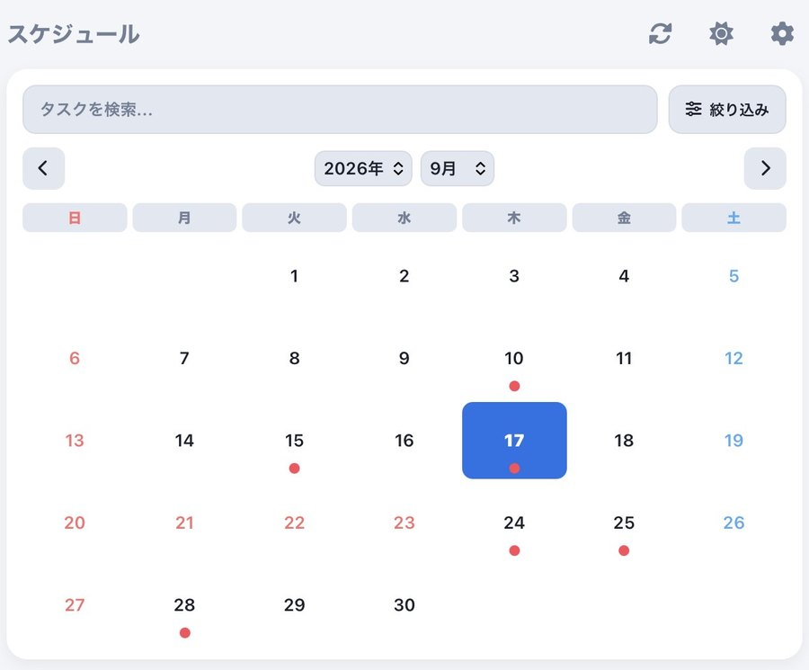
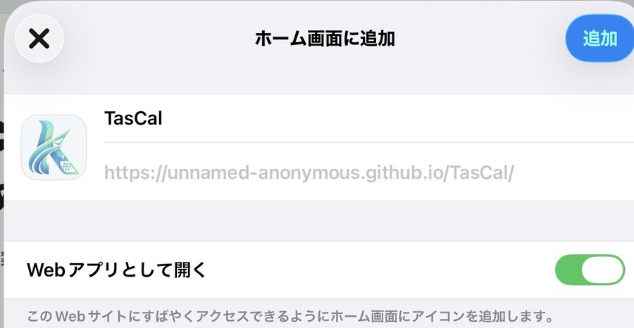
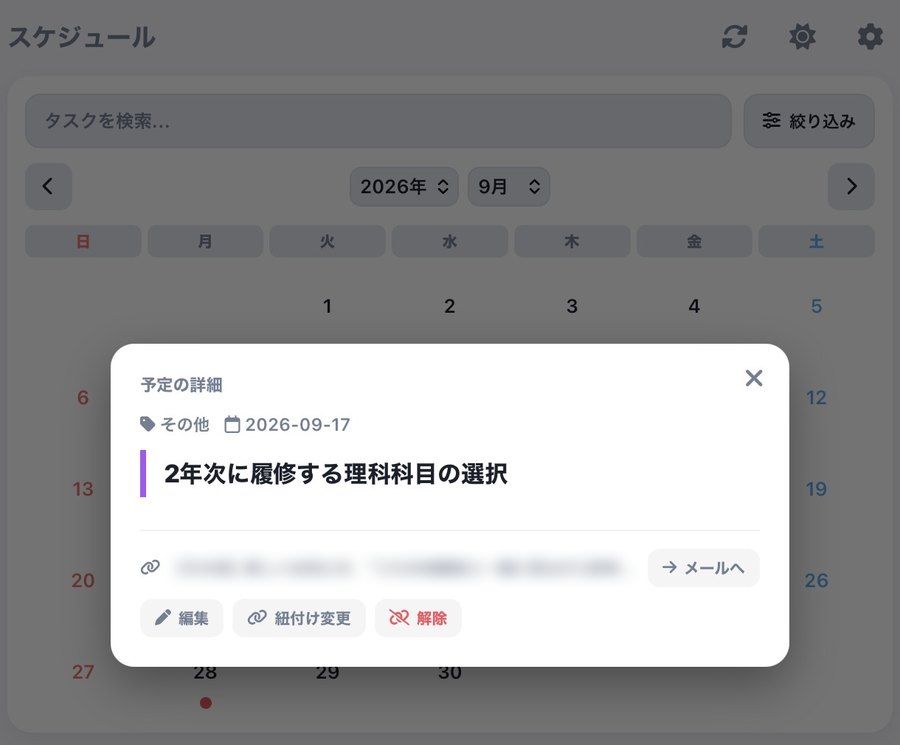
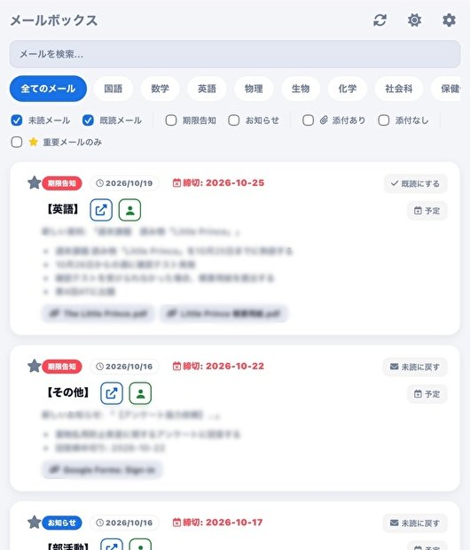
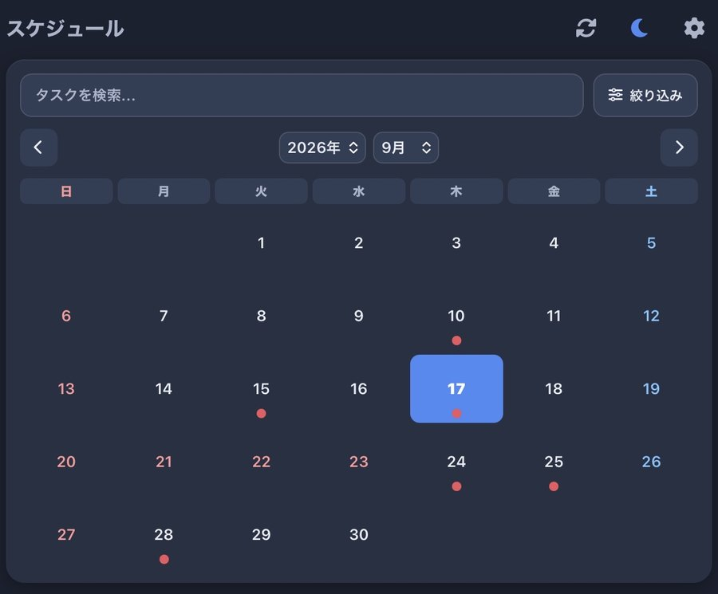

ご利用の前に
このページは案内専用です。アプリは、ホーム画面に追加したアイコンから起動します。
iPhoneまたはiPadのSafariで表示します。
共有ボタンから「ホーム画面に追加」を選びます。名前が「TasCal」になっていることを確認して追加します。「Webアプリとして開く」が表示されたら、オンにしてください。

初回はGoogleアカウントでログインし、権限を許可します。続いて設定画面でGemini APIキーを登録すれば、準備は完了です。キーはGoogle AI Studioで無料で取得できます。
初回は「このアプリはGoogleで確認されていません」と表示されます。個人が開発したアプリのためです。メール・カレンダー・ドライブへのアクセス許可を求めます。詳しい手順は、下の導入ガイドで案内します。
自動で整理
Geminiがメールを解析し、教科(14分類)・種類・締切日・やることを抽出します。長い本文を読まなくても、要点がひと目でわかります。
提出期限のあるメールは、Googleカレンダーに終日の予定として自動で登録されます。

メールボックス
教科別のタブに、既読・未読、期限告知とお知らせ、添付の有無、⭐重要の絞り込み。キーワード検索で、目的のメールへ直接移動できます。
添付ファイルに加え、Classroomの資料・リンク・フォームも取得。カードから元のGmailやClassroomへ、ワンタップで移動できます。

デザイン
テーマは、アプリ内でいつでも切り替えられます。
